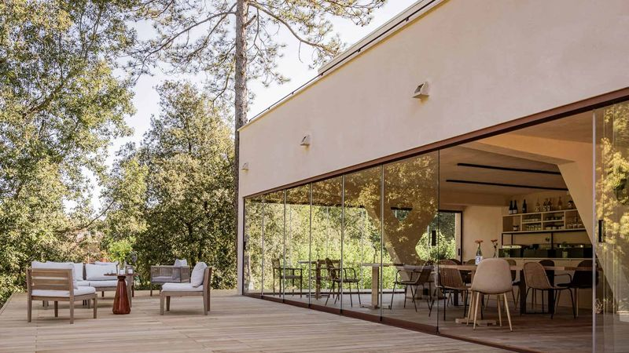
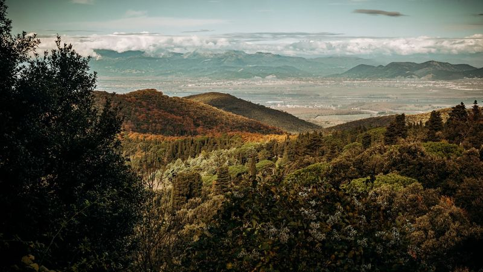

Grazie. Trovi la nostra guida
da scaricare qui sotto.
Tra qualche minuto riceverai un'email di benvenuto e un racconto della nostra storia.
Nel frattempo, guarda il video di ringraziamento qui sotto e scopri i nostri prossimi ritiri in programma.
Il Centro
Chi è Valle Benedetta Retreat Center
Valle Benedetta è un centro di ritiro contemplativo immerso nelle colline toscane, vicino a Livorno. Un luogo dove il silenzio non è assenza, ma presenza. Fondato da Eraldo e Komal, nasce dall'incontro tra tradizioni contemplative orientali e la profonda spiritualità del paesaggio toscano. Ogni ritiro è un invito a fermarsi, ascoltare e ritrovare il filo con se stessi.

La Location
Dove si trova Valle Benedetta
Il centro si trova sulle colline di Valle Benedetta, a pochi chilometri da Livorno, in Toscana. Raggiungibile in treno o auto, è circondato da uliveti, boschi e panorami sulla costa tirrenica. Un contesto naturale che diventa parte integrante dell'esperienza: il paesaggio cura insieme alla pratica.

Vuoi sapere di più su di noi?
Esplora il sito ufficiale di Valle Benedetta Retreat Center.
Vai al sito ufficiale →